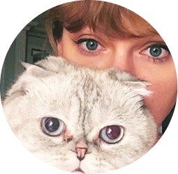
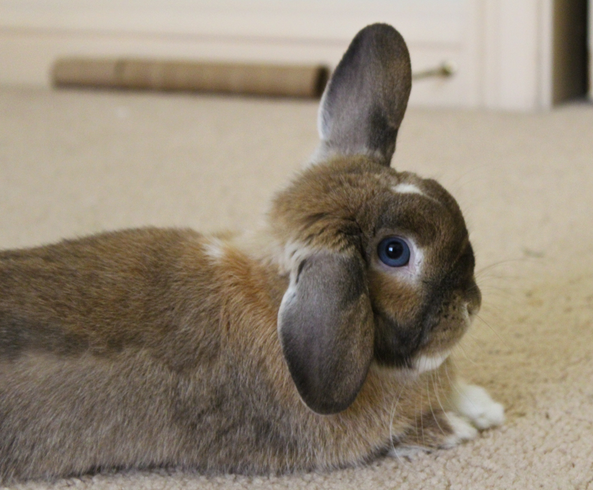
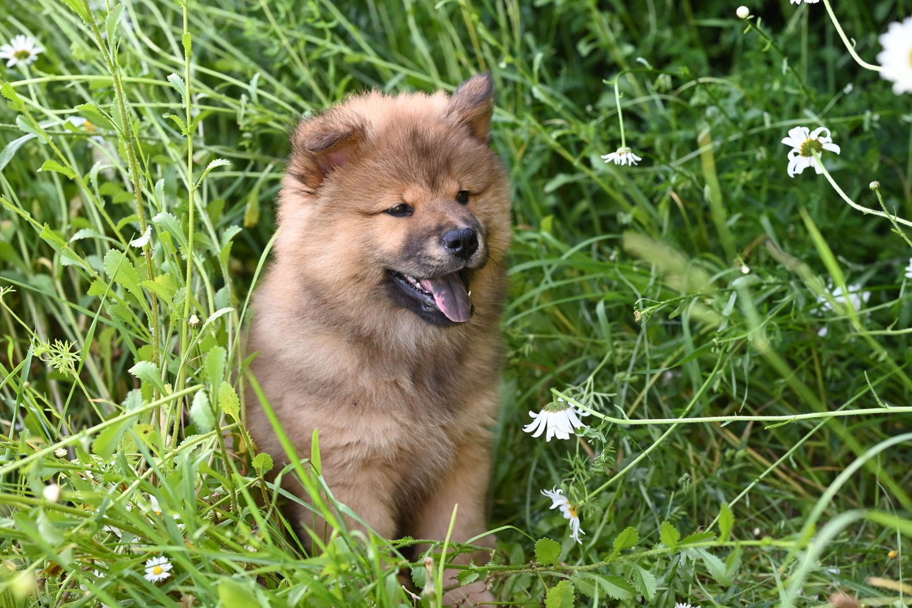
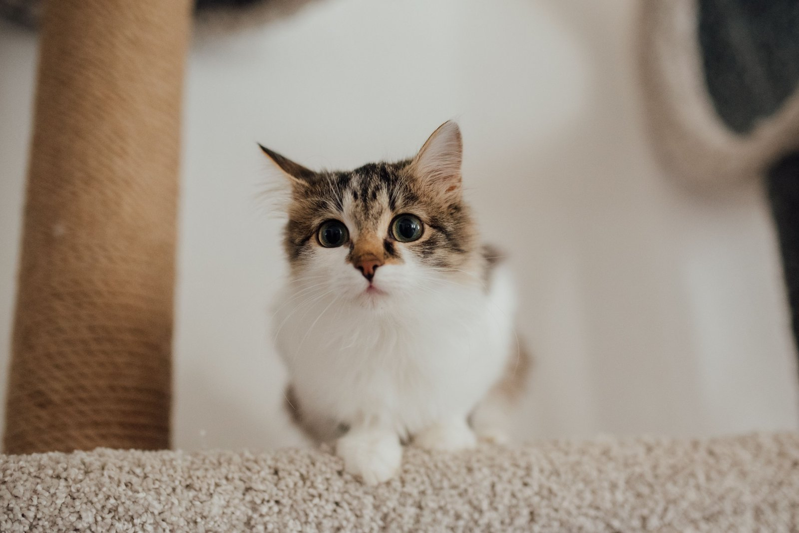
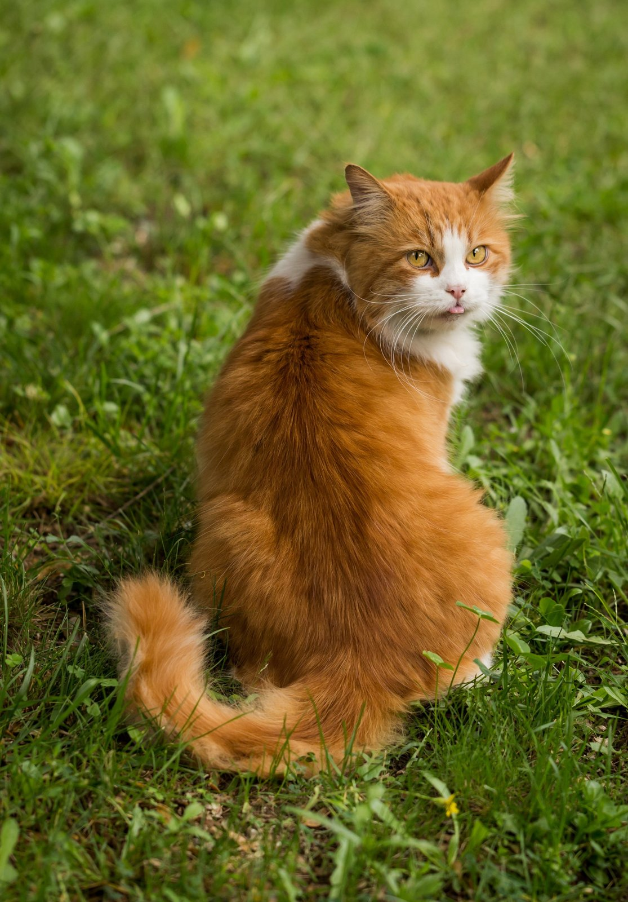
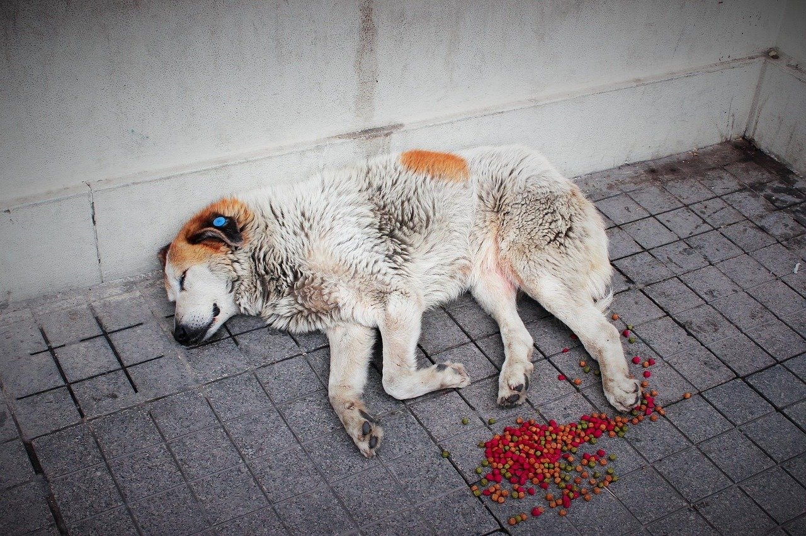
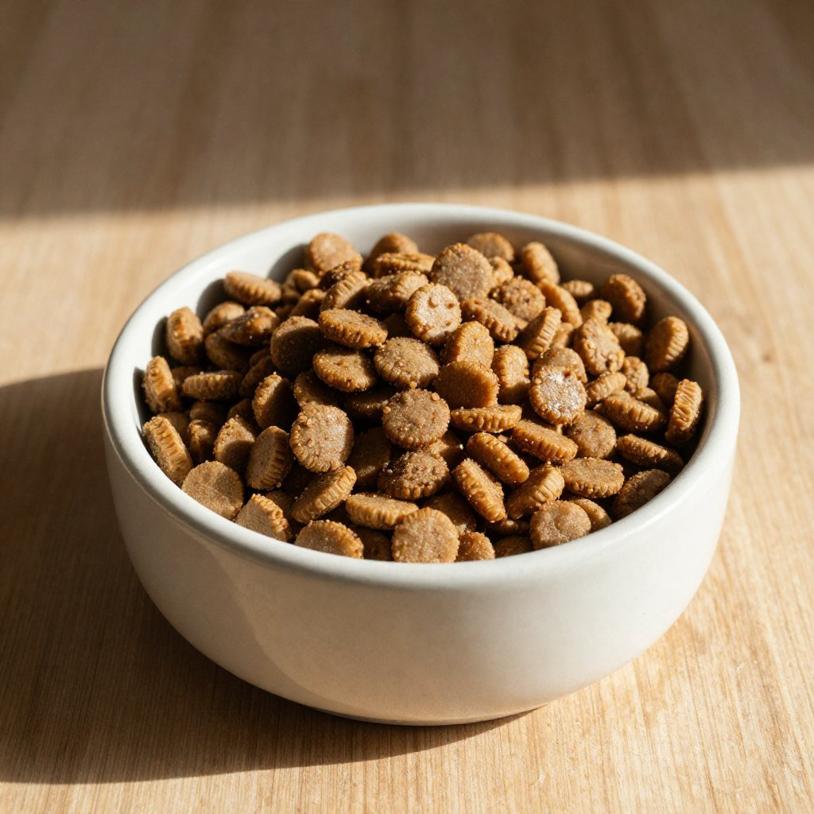
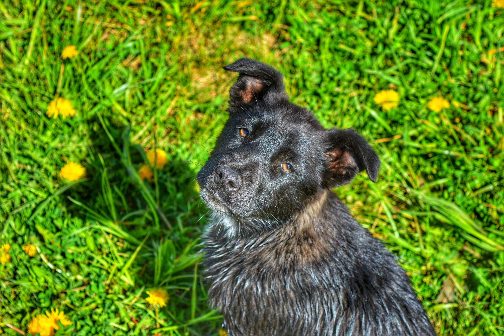
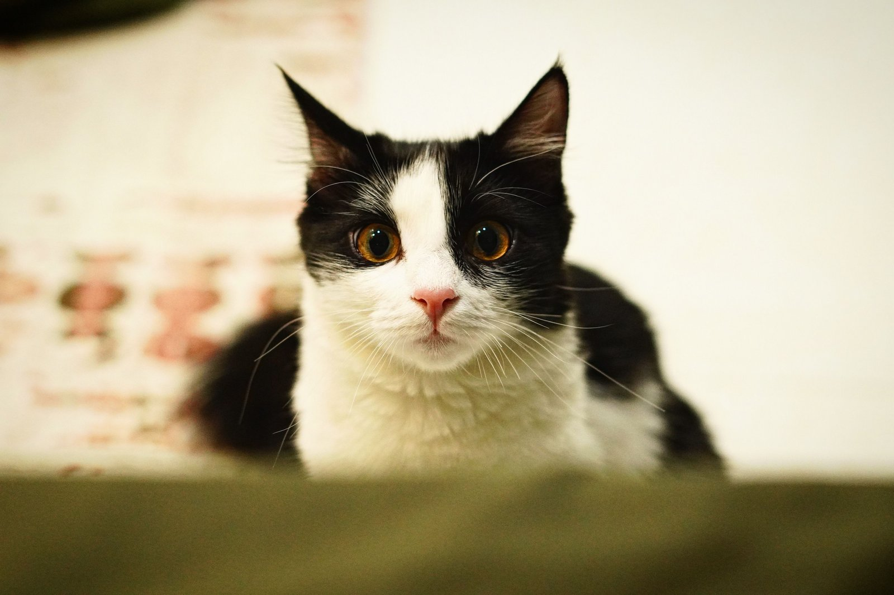

Meu Perfil
Gerencie suas informações e acompanhe suas atividades.

Juliana Silva
juliana.silva@email.com
(11) 99999-9999
São Paulo (SP)
12
Animais Resgatados
08
Em processo de adoção
05
Pedidos de ajuda ativos
Meus Pets

Slinky
coelho - 7 meses

Mel
cachorro - 2 anos

Brownie
gato - 4 anos
Meus pedidos de ajuda

Procure minha Mel
Ativo

Ajuda para resgate
São Paulo, SP
Em andamento

Precisamos de ração
São Paulo, SP
Concluído
Minhas Adoções

Bidu
Concluído

Lola
Concluído